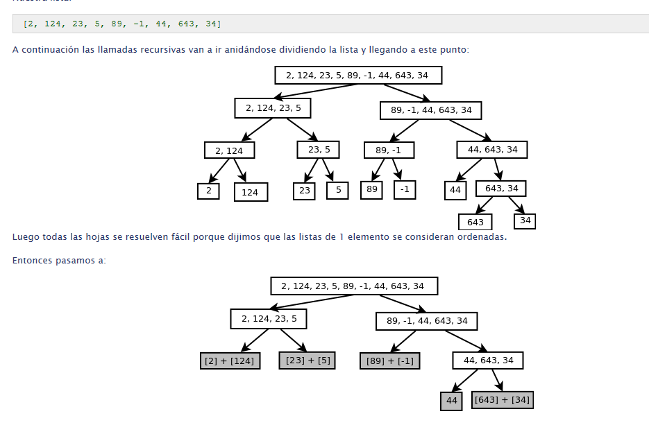
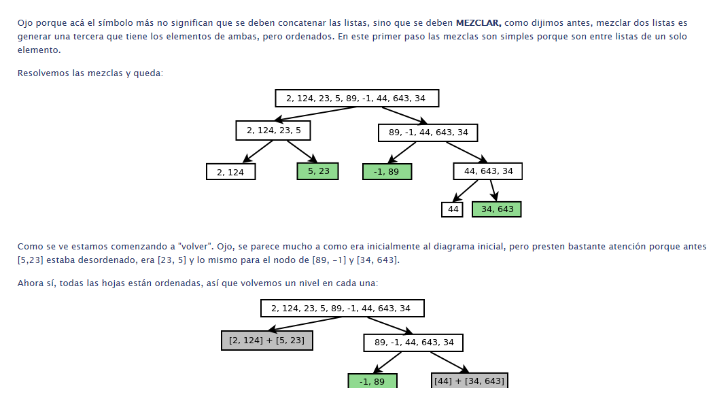
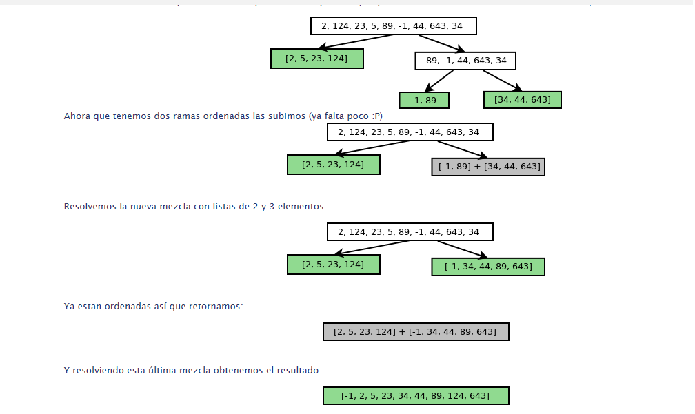

La idea de este algoritmo es la de dividir el problema en subproblemas más pequeños. Para eso es indispensable utilizar la recursividad.
La idea es que es fácil, dadas dos listas ordenadas cada una, obtener una tercera que tiene todos sus elementos ordenados.
Ejemplo:
[2, 6, 10] + [-1, 3, 12] => [-1, 2, 3, 6, 10, 12]
El algoritmo llama a esto mezclar.
Entonces el algoritmo completo se basa en:
Caso Base: una lista vacía o de un elemento ya está ordenada
Regla Recursiva:
partir la lista en 2 partes
ordenar recursivamente ambas partes
luego mezclarlas como vimos arriba..



Análisis del Algoritmo El mergeSort tiene tiempo de ejecución dado por el orden O(n log(n)) Es decir que es bastante más rápido que el Algoritmo Bubbe Sort